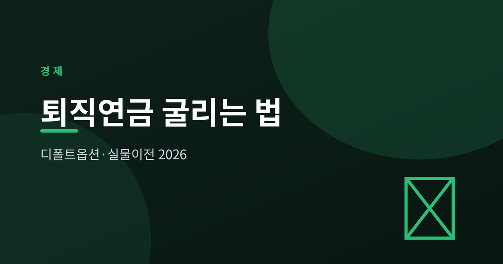
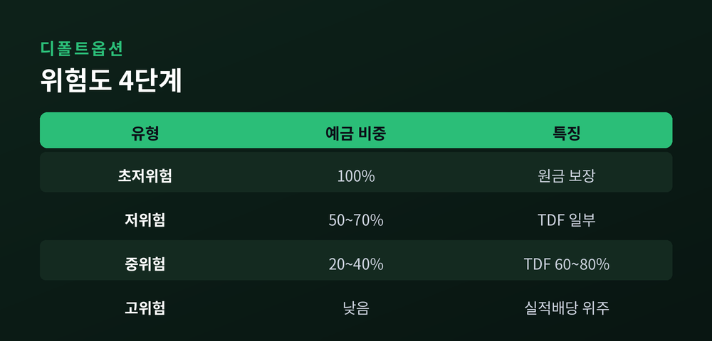
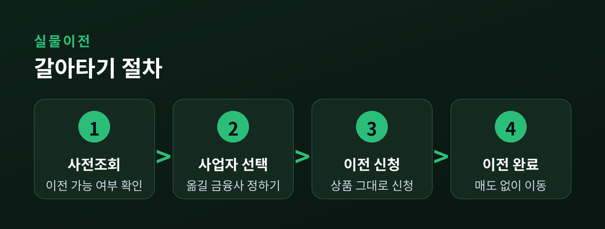
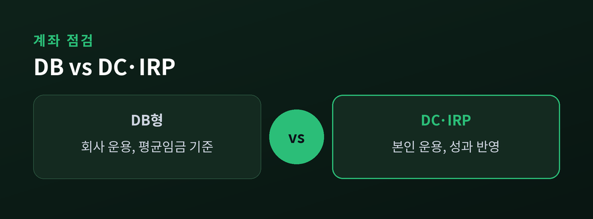

노후자금 굴리는 법

퇴직연금은 오래 방치되기 쉬운 돈입니다. 그런데 2024년 실물이전 제도와 자리 잡은 디폴트옵션이 맞물리면서, 이제는 손을 대는 사람과 그렇지 않은 사람의 격차가 조금씩 벌어지고 있습니다. 노후자금을 굴리는 기본기를 짚어 보겠습니다.
디폴트옵션은 사전지정운용제도의 다른 이름입니다. DC형과 IRP 가입자가 별도의 운용 지시를 하지 않으면, 미리 지정해 둔 방법으로 적립금이 자동 운용됩니다. 아무것도 정하지 않아 현금처럼 잠들어 있던 돈을 굴러가게 만드는 장치인 셈입니다.
상품은 위험도에 따라 초저위험·저위험·중위험·고위험 네 단계로 나뉩니다. 초저위험은 예금 100%로 원금이 보장되고, 위험도가 올라갈수록 TDF 같은 실적배당형 비중이 커집니다. 각 상품은 고용노동부 심의를 거쳐 장관 승인을 받은 것들입니다.
디폴트옵션은 빠르게 커졌습니다. 2025년 말 기준 적립금은 53조3318억원으로 한 해 만에 33% 넘게 늘었습니다. 다만 속을 들여다보면 아쉬움이 남습니다.
적립금의 약 85%가 정기예금 같은 안정형에 몰려 있습니다. 예전엔 아예 방치되던 돈이 지금은 최소한 예금으로 굴러가지만, 딱 거기까지입니다. 안정형의 1년 수익률은 약 2.6%로 물가상승률(2.1%)을 겨우 웃도는 수준입니다. 반면 은퇴 시점에 맞춰 비중을 자동 조절하는 TDF는 같은 기간 약 14% 수익을 냈습니다. 물론 실적배당형은 손실 가능성도 함께 안고 갑니다.

2024년 10월 시행된 실물이전 제도도 함께 봐야 합니다. 예전엔 다른 금융사로 옮기려면 보유 상품을 전부 팔아 현금화해야 했습니다. 지금은 상품을 그대로 둔 채 사업자만 바꿀 수 있습니다.
시행 약 8개월 만에 누적 8만7000건, 5.1조원이 옮겨졌습니다. 다만 조건이 있습니다. 이전은 같은 제도 안에서만 가능하고(IRP→IRP, DC→DC), 디폴트옵션 상품이나 보험계약 등 일부는 옮길 수 없습니다. 2025년 7월부터는 신청 전 이전 가능 여부를 미리 조회할 수 있습니다.
갈아타기 전에 내 상품이 이전 대상인지 사전조회부터 확인하는 편이 안전합니다.

결국 출발점은 내 퇴직연금이 어떤 유형인지 아는 것입니다. DB형은 회사가 운용해 퇴직 직전 3개월 평균임금 기준으로 금액이 정해지고, DC형과 IRP는 내가 직접 굴립니다. 스스로 운용하는 유형이라면 디폴트옵션과 상품 선택이 그만큼 중요해집니다.
수수료도 챙길 지점입니다. 2025년 42개 사업자의 수수료 수익은 약 2조1285억원으로 추산됩니다. 운용관리 수수료는 연 0.2~0.6%, 자산관리 수수료는 연 0.1~0.5% 수준입니다. 적립금이 커질수록 부담 금액도 늘어나는 만큼, 총비용을 한 번쯤 비교해 볼 만합니다.

노후자금은 크게 굴리기보다 새지 않게 관리하는 데서 갈립니다. 오늘 내 계좌 유형과 디폴트옵션 설정부터 열어 보는 것이 첫걸음일지도 모릅니다.
본 글은 특정 상품에 대한 투자 권유가 아니라 참고용 정보이며, 수치와 제도는 시점에 따라 달라질 수 있습니다.